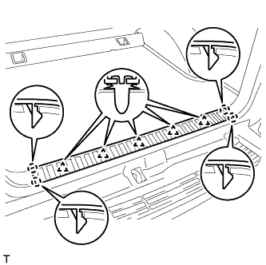
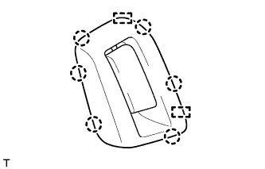
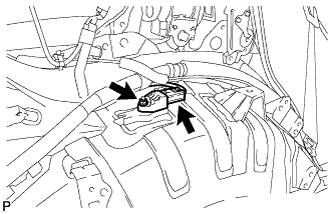

ЗАДНИЙ ДАТЧИК СИСТЕМЫ SRS (для 5-дверной модели) > СНЯТИЕ |
| 1. ОТСОЕДИНИТЕ ПРОВОД ОТ ОТРИЦАТЕЛЬНОГО ВЫВОДА АККУМУЛЯТОРНОЙ БАТАРЕИ |
| 2. СНИМИТЕ ЗАДНЕЕ СИДЕНЬЕ № 2 В СБОРЕ (для моделей с задним сиденьем № 2) |
Для левого сиденья с ручным приводом:
Снимите заднее сиденье № 2 в сборе (Нажмите здесь).
Для левого сиденья с электроприводом:
Снимите заднее сиденье № 2 в сборе (Нажмите здесь).
Для моделей с противоположно расположенными сиденьями:
Снимите заднее сиденье № 2 в сборе (Нажмите здесь).
| 3. СНИМИТЕ ЗАДНЮЮ НАКЛАДКУ ПОРОГА ПОЛА № 1 (для моделей с задним сиденьем № 2) |
 |
С помощью отвертки освободите 2 захвата и снимите заднюю накладку порога пола № 1.
| *1 | Защитная клейкая лента |
| 4. СНИМИТЕ ЛЕВУЮ ЗАДНЮЮ БОКОВУЮ ОПОРНУЮ НАКЛАДКУ (для моделей с задним сиденьем № 2) |
 |
Выверните 2 болта и снимите заднюю боковую опорную накладку.
| 5. СНИМИТЕ ОПОРНУЮ НАКЛАДКУ ЛЕВОЙ ЗАДНЕЙ ДВЕРИ |
 |
Наклейте защитную клейкую ленту вокруг опорной накладки задней двери.
С помощью отвертки освободите 3 фиксатора, 6 захватов и 2 направляющие и снимите опорную накладку задней двери.
| *1 | Защитная клейкая лента |
| 6. СНИМИТЕ УПЛОТНИТЕЛЬ ОБШИВКИ ПРОЕМА ЛЕВОЙ ЗАДНЕЙ ДВЕРИ |
 |
Снимите уплотнитель обшивки проема задней двери.
| 7. СНИМИТЕ ЗАДНЮЮ КРЫШКУ В СБОРЕ (для моделей с задней крышкой) |
Снимите заднюю крышку.
| 8. СНИМИТЕ ПЕРЕДНЮЮ ОБЛИЦОВОЧНУЮ НАКЛАДКУ БАГАЖНОГО ОТДЕЛЕНИЯ (для моделей без заднего сиденья № 2) |
 |
Освободите 4 захвата и снимите накладку.
 |
Выверните болт и снимите защелку ремня для удержания багажа и переднюю облицовочную накладку багажного отделения.
| *1 | Защелка ремня для удержания багажа |
| 9. СНИМИТЕ ПАНЕЛЬ ПОЛКИ БАГАЖНОГО ОТДЕЛЕНИЯ № 1 В СБОРЕ (для моделей без заднего сиденья № 2) |
 |
Освободите фиксатор и снимите панель полки багажного отделения № 1.
| 10. СНИМИТЕ ЗАДНЮЮ ОПОРНУЮ ПАНЕЛЬ КОВРИКА ЗАДНЕГО ПОЛА (для моделей без заднего сиденья № 2) |
|  |
Освободите 5 фиксаторов и 4 захвата и снимите заднюю опорную пластину коврика заднего пола.
| 11. СНИМИТЕ ЛЕВУЮ БОКОВУЮ НАПРАВЛЯЮЩУЮ ПОЛА БАГАЖНОГО ОТДЕЛЕНИЯ (для моделей с направляющей полки багажного отделения) |
 |
Выверните 3 болта и снимите боковую направляющую пола.
| 12. СНИМИТЕ ПРАВУЮ БОКОВУЮ НАПРАВЛЯЮЩУЮ ПОЛА БАГАЖНОГО ОТДЕЛЕНИЯ (для моделей с направляющей полки багажного отделения) |
| 13. СНИМИТЕ ЗАДНИЙ НАПОЛЬНЫЙ КОВРИК В СБОРЕ (для моделей без заднего сиденья № 2) |
Освободите 4 захвата и снимите задний напольный коврик.

| *A | для моделей без направляющей полки багажного отделения | *B | для моделей с направляющей полки багажного отделения |
| *C | Для сидений с противоположным расположением | - | - |
| 14. СНИМИТЕ НАКЛАДКУ КРЕПЛЕНИЯ ПОЯСНОГО РЕМНЯ БЕЗОПАСНОСТИ ЗАДНЕГО СИДЕНЬЯ № 1 |
 |
Освободите 3 захвата и снимите накладку крепления поясного ремня безопасности заднего сиденья № 1.
| 15. СНИМИТЕ ЗАЩЕЛКУ ОБЛИЦОВКИ БАГАЖНОГО ОТДЕЛЕНИЯ № 1 |
 |
Снимите защелку облицовочной панели багажного отделения, повернув ее по часовой стрелке.
| 16. СНИМИТЕ КОЛПАЧОК КРЕПЛЕНИЯ ЗАДНЕЙ КРЫШКИ № 1 |
 |
С помощью отвертки отцепите 2 захвата и снимите колпачок крепления задней крышки № 1.
| *1 | Защитная клейкая лента |
| 17. СНИМИТЕ ЗАГЛУШКУ ВЕРХНЕГО ПОРУЧНЯ (для моделей с задним сиденьем № 2) |
 |
С помощью отвертки освободите 2 захвата и снимите заглушку верхнего поручня.
| *1 | Защитная клейкая лента |
| 18. СНИМИТЕ ВЕРХНИЙ ПОРУЧЕНЬ В СБОРЕ (для моделей с задним сиденьем № 2) |
 |
Выверните 2 болта и снимите верхний поручень.
| 19. СНИМИТЕ ПЕРЕДНЮЮ БОКОВУЮ ОБЛИЦОВОЧНУЮ НАКЛАДКУ ПОЛКИ БАГАЖНОГО ОТДЕЛЕНИЯ |
 |
С помощью отвертки освободите 2 захвата и снимите переднюю боковую облицовочную накладку полки багажного отделения.
| *1 | Защитная клейкая лента |
| 20. СНИМИТЕ ЛЕВУЮ БОКОВУЮ ОБЛИЦОВОЧНУЮ ПАНЕЛЬ ПОЛКИ БАГАЖНОГО ОТДЕЛЕНИЯ В СБОРЕ |
Для моделей без заднего сиденья № 2:
 |
Выверните болт и отсоедините напольное крепление ремня безопасности заднего сиденья № 1.
|  |
Освободите 6 захватов и 2 направляющих и отсоедините опору рычага фиксации спинки заднего сиденья.
Выверните 4 болта и 2 винта.
Ослабьте 5 зажимов и 8 фиксаторов.
Пропустите опору рычага фиксации спинки заднего сиденья через боковую облицовочную панель полки багажного отделения и снимите боковую облицовочную панель полки багажного отделения.
Для моделей с задним сиденьем № 2:
|
Выверните болт и отсоедините напольное крепление ремня безопасности заднего сиденья № 1.
 |
Выверните болт и отсоедините напольное крепление ремня безопасности заднего сиденья № 2.
Выверните 2 болта и 2 винта.
Освободите 4 фиксатора и 8 захватов и снимите боковую облицовочную панель полки багажного отделения.

| 21. СНИМИТЕ ЛЕВЫЙ ЗАДНИЙ ДАТЧИК СИСТЕМЫ SRS |
|  |
Выверните гайку и снимите задний датчик системы SRS.
Отсоедините разъем.